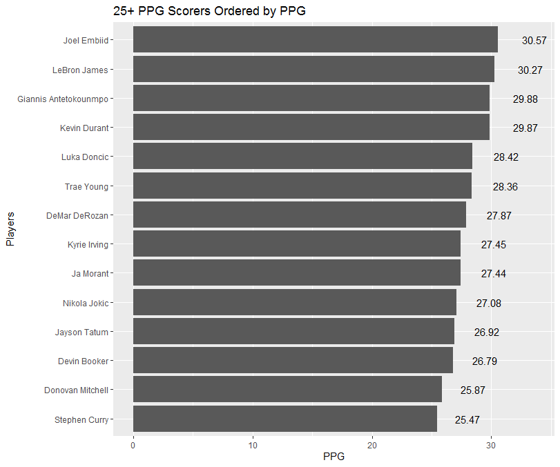
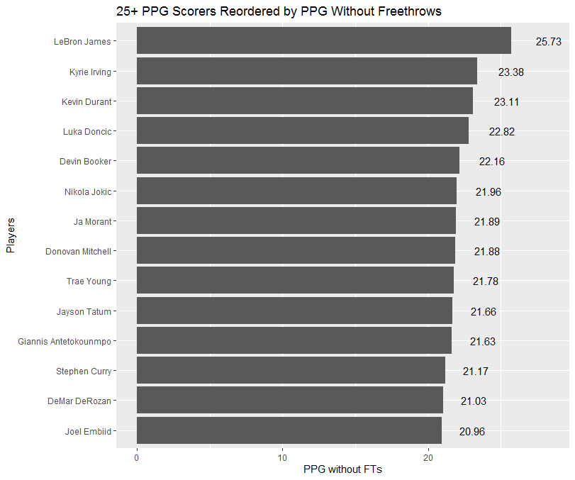

Confounded Data:
Looking back at Blog 2, we looked at some of the larger picture trends in our data. Regarding the NBA data, one of the things we looked at were the top scorers (particularly those who scored at least 25 points per game), and their field goal percentage. This relationship showed how efficiently the top scorers of the league were, and efficiency is a big factor when considering a player who is experiencing a hot hand. However, the plot from Blog 2 looked at total PPG compared to field goal efficiency, completely disregarding the points earned from free throws. Because of this, we chose to take a deeper look at the PPG these players scored, and subtracting their points earned from free throws.
# Code To Make Graph
library(tidyverse)
data <- read.csv(file = './ASA All NBA Raw Data 2022 regular season.csv')
data2 <- group_by(data, player) %>%
filter(mp != '0:00') %>%
distinct(game_date, .keep_all = TRUE) %>%
summarize(total_pts = sum(pts),
total_games = n(),
ppg = total_pts/total_games,
total_ft = sum(ft),
ftpg = total_ft/total_games,
pts_noft = ppg-ftpg)
scoring <- filter(data2, ppg >= 25)
ggplot(scoring, aes(reorder(player, ppg, sum), ppg, label=format(round(ppg, 2), nsmall = 2))) +
geom_col() +
coord_flip() +
geom_text(position = position_stack(vjust = 1.1)) +
ylab('PPG') +
xlab('Players') +
ggtitle('25+ PPG Scorers Ordered by PPG')# To Prevent Needing to Rerun EDA Each Time
library(knitr)
knitr::include_graphics('./Rplot_ppg_w_fts.png')
Now, the graph above simply shows the players who scored the most PPG in the 2022 NBA season. At face value, it would be easy to determine that Joel Embiid most likely had the highest points scored from 2pt and 3pt field goals, as he is far ahead many of the other players in overall PPG. However, by calculating the free throws made per game for each player, and then subtracting this from their points per game, we can see the effects that free throws had on their overall scoring.
# Code To Make Graph
ggplot(scoring, aes(reorder(player, pts_noft, sum), pts_noft, label=format(round(pts_noft, 2), nsmall = 2))) +
geom_col() +
coord_flip() +
geom_text(position = position_stack(vjust = 1.1)) +
ylab('PPG without FTs') +
xlab('Players') +
ggtitle('25+ PPG Scorers Reordered by PPG Without Freethrows')# To Prevent Needing to Rerun EDA Each Time
library(knitr)
knitr::include_graphics('./Rplot_ppg_no_fts.png')
As can be seen above, the PPG without free throws drastically changes the landscape of the scoring leader board. Joel Embiid was shockingly had the lowest amount of points scored per game among the same pool of scorers. This discrepancy shows the effect that free throws can have on total scoring. Most people would also say that field goal scoring and efficiency plays a larger role in determining a player’s hot streak. Many players (including Joel Embiid) who score heavily relying on free throws are often criticized for foul-baiting and playing an unappealing game. The graph above displays what one may consider a more realistic look at the PPG of the highest scoring players from strictly field goals.
##Streak Analysis The purpose of this section is to analyze how streaks(consecutive games scoring above their average) are distributed across the NBA by both top players and teams. We want to get a sense for how common it is for players and teams to continue the streaks once they have started. There is a well known adage in basketball, called “feeding the hot hand” and “heat checks” where players believe that their next shot will go in based off of their previous successes. Let’s see if this applies throughout entire games and seasons. To start we will get a sense for how streaks are distributed. In our case, we are noting both positive and negative streaks. It is important to note that I am allowing players to “continue” their streak even if they have not scored above their average in a game if they have played less than 15 minutes in that game. I believe this will account for injuries, foul trouble, or extremely unfavorable matchups.
library(here)## here() starts at C:/Users/leose/Third_Semester/MA_615/r_projects/ma4615-fa22-final-project-sports_analyticslibrary(readr)
library(tidyverse)## ── Attaching packages
## ───────────────────────────────────────
## tidyverse 1.3.2 ──## ✔ ggplot2 3.3.6 ✔ dplyr 1.0.9
## ✔ tibble 3.1.8 ✔ stringr 1.4.1
## ✔ tidyr 1.2.0 ✔ forcats 0.5.2
## ✔ purrr 0.3.4
## ── Conflicts ────────────────────────────────────────── tidyverse_conflicts() ──
## ✖ dplyr::filter() masks stats::filter()
## ✖ dplyr::lag() masks stats::lag()##what is the average length of a streak in the nba by player and team?
#by player
data <-read_csv(here::here("dataset-ignore/raw_nba_data.csv"),show_col_types = FALSE)## Warning: One or more parsing issues, see `problems()` for detailsall_data <-data %>% group_by(player) %>% filter(mean(minutes) >25,minutes >15) %>% mutate(change_net = pts - mean(pts),direction =
sign(change_net)) %>% mutate(streak = cumsum(direction = lag(direction, default = 0)))
streak <-all_data$streak
indices<-which(diff(sign(diff(streak)))==-2)+1
local_max <-slice(all_data,indices)
local_max_all <- local_max %>%group_by(player) %>% select(streak)## Adding missing grouping variables: `player`local_max_positive <-local_max %>%group_by(player) %>% select(streak,change_net) %>%filter(streak >-1)## Adding missing grouping variables: `player`summary(local_max_all$streak)## Min. 1st Qu. Median Mean 3rd Qu. Max.
## -82.00 -25.00 -12.00 -12.55 1.00 49.00summary(local_max_positive$streak)## Min. 1st Qu. Median Mean 3rd Qu. Max.
## 0.00 3.00 8.00 11.42 17.00 49.00#by team
team_data <-data %>% distinct(game_id,.keep_all = TRUE) %>%group_by(Team_Abbrev) %>% mutate(change_net = Team_Score - mean(Team_Score),direction =
sign(change_net)) %>% mutate(streak = cumsum(direction = lag(direction, default = 0)))
team_streak <-team_data$streak
indices<-which(diff(sign(diff(team_streak)))==-2)+1
team_local_max <-slice(team_data,indices)
team_local_max_all <- team_local_max %>%group_by(player) %>% select(streak)## Adding missing grouping variables: `player`team_local_max_positive <-team_local_max %>%group_by(player) %>% select(streak,change_net) %>%filter(streak >-1)## Adding missing grouping variables: `player`summary(team_local_max_all$streak)## Min. 1st Qu. Median Mean 3rd Qu. Max.
## -27.00 -8.00 -2.00 -2.57 3.00 16.00summary(team_local_max_positive$streak)## Min. 1st Qu. Median Mean 3rd Qu. Max.
## 0.000 2.000 4.000 4.565 6.000 16.000#distribution of streaks by player
ggplot(local_max_all) +geom_freqpoly(aes(x=streak))## `stat_bin()` using `bins = 30`. Pick better value with `binwidth`.
ggplot(local_max_positive) +geom_freqpoly(aes(x=streak))## `stat_bin()` using `bins = 30`. Pick better value with `binwidth`.
#distribution of streaks by team
ggplot(team_local_max_all) +geom_freqpoly(aes(x=streak))## `stat_bin()` using `bins = 30`. Pick better value with `binwidth`.
ggplot(team_local_max_positive) +geom_freqpoly(aes(x=streak))## `stat_bin()` using `bins = 30`. Pick better value with `binwidth`.
##what are the highest streaks in the nba by player 2022
best_streaks_2022 <- data %>% group_by(player) %>% filter(mean(minutes) >25,season==2022,minutes >15) %>% mutate(change_net = pts - mean(pts),direction = sign(change_net)) %>%mutate(streak = cumsum(direction = lag(direction, default = 0))) %>% summarize(max_streak=max(streak)) %>% arrange(desc(max_streak)) %>%head(10)
top_player_data22 <- data %>% filter(player %in% best_streaks_2022$player) %>% group_by(player)%>% mutate(change_net = pts - mean(pts),
direction = sign(change_net)) %>%mutate(usg_pct=usg_pct/100) %>%mutate(direction=ifelse(direction==-1,0,1))
best_player_streaks_2022 <- data %>% group_by(player) %>% filter(mean(minutes) >25,season==2022,minutes >15) %>% mutate(change_net = pts - mean(pts),direction = sign(change_net)) %>%mutate(streak = cumsum(direction = lag(direction, default = 0)))
##chance that top player streaks continue
##What are the likelihoods that a player is going to continue a streak once they have started
a_player_data_agg <-top_player_data22 %>% mutate(a=10*lag(direction)+direction)
a_player_data_agg <-a_player_data_agg %>% mutate(a=str_c(lag(direction),direction,sep = ',')) %>% count(a) %>% mutate(prop=n/sum(n))
a_player_data_agg <-a_player_data_agg %>%head(5)
knitr::kable(a_player_data_agg)| player | a | n | prop |
|---|---|---|---|
| Cade Cunningham | 0,0 | 20 | 0.2739726 |
| Cade Cunningham | 0,1 | 11 | 0.1506849 |
| Cade Cunningham | 1,0 | 11 | 0.1506849 |
| Cade Cunningham | 1,1 | 30 | 0.4109589 |
| Cade Cunningham | NA | 1 | 0.0136986 |
#by team
best_team_streaks_2022 <- data %>% distinct(game_id,.keep_all=TRUE) %>% group_by(Team_Abbrev) %>% mutate(change_net = Team_Score - mean(Team_Score),direction = sign(change_net)) %>%mutate(streak = cumsum(direction = lag(direction, default = 0))) %>% mutate(max_streak=max(streak))
top_team_data22 <- data %>% filter(Team_Abbrev %in% best_team_streaks_2022$Team_Abbrev) %>% mutate(change_net = Team_Score - mean(Team_Score),
direction = sign(change_net)) %>%mutate(usg_pct=usg_pct/100) %>%mutate(direction=ifelse(direction==-1,1,0))
##chance that team streaks continue
a_team_data_agg <-top_team_data22 %>% ungroup() %>% mutate(a=10*lag(direction)+direction) %>% count(a)
a_team_data_agg <-top_team_data22 %>% mutate(a=str_c(lag(direction),direction,sep = ',')) %>% count(a) %>% mutate(prop=n/sum(n))
a_team_data_agg <-a_team_data_agg%>%head(5)
knitr::kable(a_team_data_agg)| a | n | prop |
|---|---|---|
| 0,0 | 53113 | 0.4385626 |
| 0,1 | 8054 | 0.0665032 |
| 1,0 | 8054 | 0.0665032 |
| 1,1 | 51885 | 0.4284228 |
| NA | 1 | 0.0000083 |
Finally, lets try and predict points scored based off of some key columns that I think are the most relevant. There are some flaws in the model that I want to address and work out later, but for this blog post I think it will be sufficient to show my progress. First off, I would ideally like the target variable to be direction and not points scored, but I ran into some difficulty. Additionally, I am not lagging the results in any way. I am using the entire seasons data to predict games in which that data would not have been available. Ideally, I would like to use lags of 4-6 games to calculate the prediction, as I believe that having too much data does not represent key factors like load management, player mentality, and fatigue. This will certainly come later. Additionally, at least for the team data, I would like to include a predictive model based on the very popular and promenent work of legendary data analyst Ken Pomeroy. He uses a metric that weighs a teams offensive and opponents defensive ratings,the expected number of posessions, and their league averages in a game to create a prediction for points scored by each team. Dividing this score by a players usage percentage should give me a good estimation for how a player will perform. I would like to use this model as a baseline for further predictions. I used this xgboost template to create a model. https://www.r-bloggers.com/2020/05/using-xgboost-with-tidymodels/
library(tidymodels)## ── Attaching packages ────────────────────────────────────── tidymodels 1.0.0 ──## ✔ broom 1.0.1 ✔ rsample 1.1.0
## ✔ dials 1.0.0 ✔ tune 1.0.0
## ✔ infer 1.0.3 ✔ workflows 1.1.0
## ✔ modeldata 1.0.1 ✔ workflowsets 1.0.0
## ✔ parsnip 1.0.2 ✔ yardstick 1.1.0
## ✔ recipes 1.0.1## Warning: package 'broom' was built under R version 4.2.2## ── Conflicts ───────────────────────────────────────── tidymodels_conflicts() ──
## ✖ scales::discard() masks purrr::discard()
## ✖ dplyr::filter() masks stats::filter()
## ✖ recipes::fixed() masks stringr::fixed()
## ✖ dplyr::lag() masks stats::lag()
## ✖ yardstick::spec() masks readr::spec()
## ✖ recipes::step() masks stats::step()
## • Use suppressPackageStartupMessages() to eliminate package startup messagesxgboost_data <-data %>% distinct(game_id,.keep_all=TRUE) %>% select(starts_with('Team'),starts_with('Opponent')) %>% group_by(Team_Abbrev) %>% mutate(change_net = Team_Score - mean(Team_Score),direction = sign(change_net)) %>%mutate(streak = cumsum(direction = lag(direction, default = 0))) %>% mutate(max_streak=max(streak)) %>% mutate(direction=ifelse(direction==-1,0,1))
train_test_split <- rsample::initial_split(
xgboost_data,
prop = 0.8)
preprocessing_recipe <-
recipes::recipe(Team_Score~ ., data = training(train_test_split)) %>%
# convert categorical variables to factors
recipes::step_string2factor(all_nominal()) %>%
# combine low frequency factor levels
recipes::step_other(all_nominal(), threshold = 0.01) %>%
# remove no variance predictors which provide no predictive information
recipes::step_nzv(all_nominal()) %>% prep()
cv_folds <-
recipes::bake(
preprocessing_recipe,
new_data = training(train_test_split)
) %>%
rsample::vfold_cv(v = 2)
xgboost_model <-
parsnip::boost_tree(
mode = "regression",
trees = 1000,
min_n = tune(),
tree_depth = tune(),
learn_rate = tune(),
loss_reduction = tune()
) %>%
set_engine("xgboost", objective ="reg:squarederror")
xgboost_params <-
dials::parameters(
min_n(),
tree_depth(),
learn_rate(),
loss_reduction()
)
xgboost_grid <-
dials::grid_max_entropy(
xgboost_params,
size = 6
)
knitr::kable(head(xgboost_grid))| min_n | tree_depth | learn_rate | loss_reduction |
|---|---|---|---|
| 18 | 10 | 0.0679453 | 0.0208816 |
| 20 | 4 | 0.0000000 | 0.0000000 |
| 6 | 3 | 0.0005279 | 0.0000002 |
| 25 | 1 | 0.0000001 | 0.0001036 |
| 22 | 12 | 0.0000192 | 0.0000000 |
| 30 | 13 | 0.0000000 | 0.0000114 |
xgboost_wf <-
workflows::workflow() %>%
add_model(xgboost_model) %>%
add_formula(direction ~ .)
xgboost_tuned <- tune::tune_grid(
object = xgboost_wf,
resamples = cv_folds,
grid = xgboost_grid,
metrics = yardstick::metric_set(rmse, rsq, mae),
control = tune::control_grid(verbose = TRUE)
)## i Fold1: preprocessor 1/1## ✓ Fold1: preprocessor 1/1## i Fold1: preprocessor 1/1, model 1/6## ✓ Fold1: preprocessor 1/1, model 1/6## i Fold1: preprocessor 1/1, model 1/6 (predictions)## i Fold1: preprocessor 1/1, model 2/6## ✓ Fold1: preprocessor 1/1, model 2/6## i Fold1: preprocessor 1/1, model 2/6 (predictions)## i Fold1: preprocessor 1/1, model 3/6## ✓ Fold1: preprocessor 1/1, model 3/6## i Fold1: preprocessor 1/1, model 3/6 (predictions)## i Fold1: preprocessor 1/1, model 4/6## ✓ Fold1: preprocessor 1/1, model 4/6## i Fold1: preprocessor 1/1, model 4/6 (predictions)## i Fold1: preprocessor 1/1, model 5/6## ✓ Fold1: preprocessor 1/1, model 5/6## i Fold1: preprocessor 1/1, model 5/6 (predictions)## i Fold1: preprocessor 1/1, model 6/6## ✓ Fold1: preprocessor 1/1, model 6/6## i Fold1: preprocessor 1/1, model 6/6 (predictions)## ! Fold1: internal: A correlation computation is required, but `estimate` is constant and ha...## ✓ Fold1: internal## i Fold2: preprocessor 1/1## ✓ Fold2: preprocessor 1/1## i Fold2: preprocessor 1/1, model 1/6## ✓ Fold2: preprocessor 1/1, model 1/6## i Fold2: preprocessor 1/1, model 1/6 (predictions)## i Fold2: preprocessor 1/1, model 2/6## ✓ Fold2: preprocessor 1/1, model 2/6## i Fold2: preprocessor 1/1, model 2/6 (predictions)## i Fold2: preprocessor 1/1, model 3/6## ✓ Fold2: preprocessor 1/1, model 3/6## i Fold2: preprocessor 1/1, model 3/6 (predictions)## i Fold2: preprocessor 1/1, model 4/6## ✓ Fold2: preprocessor 1/1, model 4/6## i Fold2: preprocessor 1/1, model 4/6 (predictions)## i Fold2: preprocessor 1/1, model 5/6## ✓ Fold2: preprocessor 1/1, model 5/6## i Fold2: preprocessor 1/1, model 5/6 (predictions)## i Fold2: preprocessor 1/1, model 6/6## ✓ Fold2: preprocessor 1/1, model 6/6## i Fold2: preprocessor 1/1, model 6/6 (predictions)## ! Fold2: internal: A correlation computation is required, but `estimate` is constant and ha...## ✓ Fold2: internalxgboost_tuned %>%
tune::show_best(metric = "rmse") %>%
knitr::kable()| min_n | tree_depth | learn_rate | loss_reduction | .metric | .estimator | mean | n | std_err | .config |
|---|---|---|---|---|---|---|---|---|---|
| 18 | 10 | 0.0679453 | 0.0208816 | rmse | standard | 0.0151824 | 2 | 0.0115265 | Preprocessor1_Model1 |
| 6 | 3 | 0.0005279 | 0.0000002 | rmse | standard | 0.2953348 | 2 | 0.0002447 | Preprocessor1_Model3 |
| 22 | 12 | 0.0000192 | 0.0000000 | rmse | standard | 0.4905093 | 2 | 0.0000068 | Preprocessor1_Model5 |
| 25 | 1 | 0.0000001 | 0.0001036 | rmse | standard | 0.4999253 | 2 | 0.0000001 | Preprocessor1_Model4 |
| 20 | 4 | 0.0000000 | 0.0000000 | rmse | standard | 0.5000000 | 2 | 0.0000000 | Preprocessor1_Model2 |
xgboost_best_params <- xgboost_tuned %>%
tune::select_best("mae")
knitr::kable(xgboost_best_params)| min_n | tree_depth | learn_rate | loss_reduction | .config |
|---|---|---|---|---|
| 18 | 10 | 0.0679453 | 0.0208816 | Preprocessor1_Model1 |
xgboost_model_final <- xgboost_model %>%
finalize_model(xgboost_best_params)
train_processed <- bake(preprocessing_recipe, new_data = training(train_test_split))
train_prediction <- xgboost_model_final %>%
# fit the model on all the training data
fit(
formula = direction ~ .,
data = train_processed
) %>%
# predict the sale prices for the training data
predict(new_data = train_processed) %>%
bind_cols(training(train_test_split))
xgboost_score_train <-
train_prediction %>%
yardstick::metrics(Team_Score, .pred) %>%
mutate(.estimate = format(round(.estimate, 2), big.mark = ","))
knitr::kable(xgboost_score_train)| .metric | .estimator | .estimate |
|---|---|---|
| rmse | standard | 111.57 |
| rsq | standard | 0.61 |
| mae | standard | 110.89 |
test_processed <- bake(preprocessing_recipe, new_data = testing(train_test_split))
test_prediction <- xgboost_model_final %>%
# fit the model on all the training data
fit(
formula = Team_Score ~ .,
data = train_processed
) %>%
# use the training model fit to predict the test data
predict(new_data = test_processed) %>%
bind_cols(testing(train_test_split))
# measure the accuracy of our model using `yardstick`
xgboost_score <-
test_prediction %>%
yardstick::metrics(Team_Score, .pred) %>%
mutate(.estimate = format(round(.estimate, 2), big.mark = ","))
knitr::kable(xgboost_score)| .metric | .estimator | .estimate |
|---|---|---|
| rmse | standard | 0.67 |
| rsq | standard | 1.00 |
| mae | standard | 0.32 |
ggplot(test_prediction, aes(x = .pred, y = Team_Score,color=abs(Team_Score -.pred))) +
geom_point() +
xlab("Team Score") +
ylab("Predicted Team_Score")